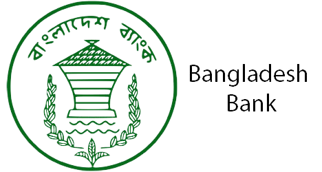

Categories 👉 Govt Job 📍 Bank Job 📍 Company Job 📍 All Notice
Bangladesh Bank Job Circular 2023

Bangladesh Bank Job Circular 2023 has been published by the Authority. According to the circular passed students also can apply for these posts. The Bangladesh Bank has issued a recruitment notice for some posts vacant seats.